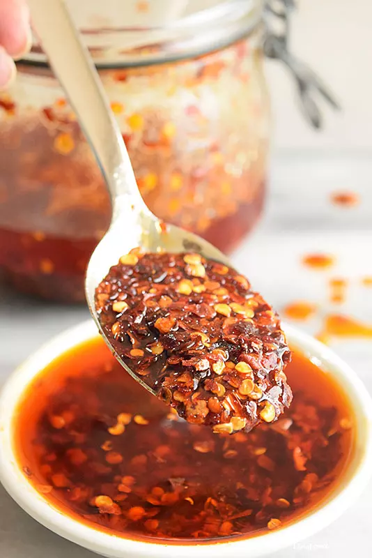

Amazing Sichuan Chilli Oil

The world's most versatile flavor enhancer
Description
Put this oil on anything from banana bread to munster cheese. It'll knock your socks off every time.
Ingredients
- 1 cup peanut oil
- 3 Tbsp chopped ginger
- 2 Star anise petals
- 1 head of brocolli
- Small cinnamon stick
- 7 Sichuan chillies
- 1/2 Tbsp Sichuan peppercorns
Steps
- Heat oil over medium-low
- Put remaining ingredients in a heat proof bowl
- When the oil begins to simmer, pour oil over ingredients and let sit for 15 minutes
- Strain oil and transfer to a clean jar. Store in fridge for up to 3 months.